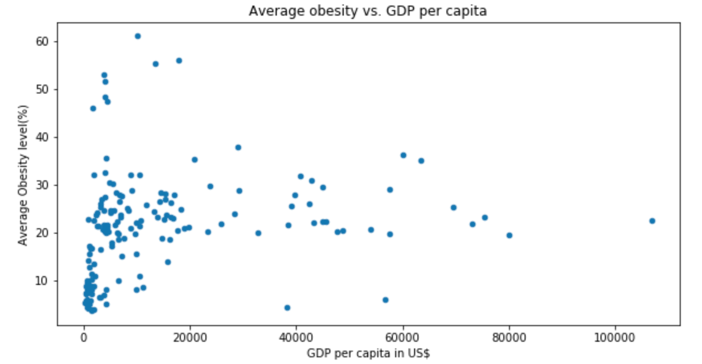

The goal of our project was to look at the relationship between a country’s economic
conditions and its level of obesity. In order to draw the relationship, GDP as an
indication of a country’s economic standing and BMI as an indication of the rate of
obesity in said country were used.
ETL Process
Data Import/Extract Sources
Data Transform
Data Integrity
Data Loading and Availability
Data Import/Extract Sources
Our dataset from Kaggle examines country’s levels of obesity.
These values are given as a percentage and show an average across the time period
of 1975-2016. Our data set from Wikipedia shows a country’s GDP per capita.
These values are listed in dollars. The links to the two data sets are:
Data Transform
Data was imported to python and cleaned the data. Renamed the headers with more appropriate
names. Some of the country names were adjusted so that
they were consistent in both data sets. Finally the two data sets were merged inot sinngle Pandas
dataframe and null values were dropped.
Data Integrity
The final dataset had 165 countries with values for obesity and GDP. It was
an acceptable dataset for further analysis. The data was saved in a PostgreSQL Database
called Obesity.
Data Loading and Availability

Our client can access the database using both python dataframes and PostgreSQL.